01 / OVERVIEW派系概览
瘟疫、腐化与打不死的肉墙。 推荐首发领主：库加斯。瘟疫与感染：培育瘟疫并传播，感染值解锁建筑与单位；建筑有循环周期。
混沌 · 消耗 / 瘟疫
瘟疫与感染：培育瘟疫并传播，感染值解锁建筑与单位；建筑有循环周期。
为什么玩它
主题独特，后期肉墙无解。
要注意什么
速度慢、远程弱，前期节奏拖。
纳垢灵垫线，蟾蜍龙 / 巨兽输出；瘟疫先传给自己再传敌人。
本页数值为 Patch 9.0.4 / Ultra 规模 / 0 级，不含科技、技能、装备、领主光环与战场增益。维护费是战役基础值，受难度、补给线与派系减免影响。
02 / RECOMMENDED推荐兵种
每个派系挑 6 个最值得先练、先招、先知道的名字。不是“唯一答案”，但能覆盖扛线、输出、机动和攻城。

便宜、数量多。

耐打。

飞行、远程。

肉盾。

法术 + 肉盾。

远程 + 近战。
03 / ROSTER完整兵种表
按类别展开。T 是招募等级；兵模是单位里的模型数；远程 / 射程一栏，前者是每 10 秒全队伤害，后者是射程。名将团单独列在最后。
领主与传奇领主13 个单位
| 兵种 | T | 兵模 | 生命 | 护甲 | 领导 | 速度 | 近攻 | 近防 | 武器 | 远程 / 射程 | 维护 |
|---|---|---|---|---|---|---|---|---|---|---|---|
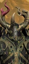 Chaos Lord of NurgleLord |
— | 1 | 5,104 | 100 | 75 | 33 | 60 | 60 | 490 | — | 250 |
Chaos Sorcerer Lord of Nurgle (Death)Wizard Lord |
— | 1 | 4,188 | 80 | 70 | 33 | 43 | 49 | 360 | — | 250 |
Chaos Sorcerer Lord of Nurgle (Nurgle)Wizard Lord |
— | 1 | 4,188 | 80 | 70 | 33 | 43 | 49 | 360 | — | 250 |
 Daemon Prince of NurgleWizard Lord |
— | 1 | 8,360 | 30 | 80 | 80 | 50 | 60 | 510 | — | 400 |
EpidemiusLord |
— | 1 | 8,000 | 80 | 80 | 28 | 50 | 50 | 480 | — | 275 |
 Exalted Great Unclean One (Death)Wizard Lord |
— | 1 | 13,620 | 50 | 80 | 36 | 60 | 50 | 550 | — | 550 |
 Exalted Great Unclean One (Nurgle)Wizard Lord |
— | 1 | 13,620 | 50 | 80 | 36 | 60 | 50 | 550 | — | 550 |
Festus the LeechlordWizard Lord |
— | 1 | 6,220 | 30 | 70 | 33 | 45 | 50 | 380 | — | 212 |
 Herald of Nurgle (Death)Wizard Lord |
— | 1 | 4,708 | 30 | 70 | 27 | 45 | 52 | 400 | — | 275 |
 Herald of Nurgle (Nurgle)Wizard Lord |
— | 1 | 4,708 | 30 | 70 | 27 | 45 | 52 | 400 | — | 275 |
Ku'gath PlaguefatherWizard Lord |
— | 1 | 14,840 | 70 | 85 | 28 | 50 | 55 | 550 | 255 / 400m | 600 |
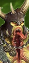 Tamurkhan the Maggot LordLord |
— | 1 | 8,500 | 60 | 85 | 55 | 56 | 42 | 500 | — | 212 |
The GlottkinWizard Lord |
— | 1 | 16,300 | 60 | 85 | 40 | 65 | 40 | 590 | — | 625 |
英雄11 个单位
| 兵种 | T | 兵模 | 生命 | 护甲 | 领导 | 速度 | 近攻 | 近防 | 武器 | 远程 / 射程 | 维护 |
|---|---|---|---|---|---|---|---|---|---|---|---|
Bloab RotspawnedWizard |
— | 1 | 4,890 | 70 | 80 | 34 | 41 | 42 | 360 | — | — |
Chaos Sorcerer of Nurgle (Death)Wizard |
— | 1 | 3,874 | 80 | 60 | 33 | 37 | 45 | 315 | — | 250 |
Chaos Sorcerer of Nurgle (Nurgle)Wizard |
— | 1 | 3,874 | 80 | 60 | 33 | 37 | 45 | 315 | — | 250 |
Cultist of NurgleMelee Specialist |
— | 1 | 12,376 | 60 | 65 | 38 | 30 | 35 | 375 | — | 250 |
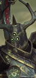 Exalted Hero of NurgleMelee Specialist |
— | 1 | 4,474 | 100 | 70 | 33 | 50 | 50 | 450 | — | 250 |
Gutrot SpumeMelee Specialist |
— | 1 | 5,970 | 90 | 85 | 32 | 50 | 48 | 430 | — | — |
Kayzk the BefouledMelee Specialist |
— | 1 | 6,140 | 70 | 80 | 75 | 60 | 56 | 490 | — | — |
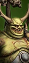 Morbidex TwicebornMelee Specialist |
— | 1 | 5,610 | 80 | 85 | 34 | 47 | 56 | 420 | — | — |
Orghotts DaemonspewMelee Specialist |
— | 1 | 6,100 | 110 | 80 | 34 | 66 | 42 | 440 | — | — |
 Plagueridden (Death)Wizard |
— | 1 | 4,308 | 30 | 65 | 27 | 40 | 47 | 370 | — | 250 |
 Plagueridden (Nurgle)Wizard |
— | 1 | 4,308 | 30 | 65 | 27 | 40 | 47 | 370 | — | 250 |
近战步兵14 个单位
| 兵种 | T | 兵模 | 生命 | 护甲 | 领导 | 速度 | 近攻 | 近防 | 武器 | 远程 / 射程 | 维护 |
|---|---|---|---|---|---|---|---|---|---|---|---|
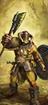 Marauders of NurgleAxe Infantry |
T1 | 120 | 10,200 | 15 | 60 | 35 | 29 | 33 | 28 | — | 106 |
NurglingsSwarm |
T1 | 60 | 9,300 | 0 | 50 | 34 | 26 | 24 | 28 | — | 88 |
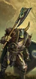 Chaos Warriors of NurgleAxe Infantry |
T2 | 100 | 9,800 | 100 | 75 | 28 | 31 | 49 | 36 | — | 200 |
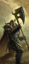 Chaos Warriors of Nurgle (Great Weapons)Great Axe Infantry |
T2 | 100 | 9,800 | 100 | 75 | 28 | 33 | 37 | 38 | — | 218 |
Forsaken of NurgleMelee Infantry |
T2 | 80 | 8,720 | 85 | 70 | 46 | 27 | 25 | 58 | — | 213 |
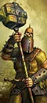 Marauders of Nurgle (Great Weapons)Hammer Infantry |
T2 | 120 | 10,200 | 15 | 60 | 35 | 29 | 25 | 30 | — | 125 |
 PestigorsGreat Axe Infantry |
T2 | 120 | 10,560 | 25 | 62 | 38 | 24 | 25 | 32 | — | 168 |
Plaguebearers of NurgleSword Infantry |
T2 | 100 | 11,600 | 30 | 75 | 27 | 30 | 32 | 48 | — | 175 |
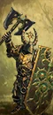 Chosen of NurgleAxe Infantry |
T3 | 80 | 11,440 | 120 | 85 | 28 | 41 | 65 | 48 | — | 338 |
 Exalted Plaguebearers of NurgleSword Infantry |
T3 | 100 | 13,200 | 35 | 80 | 27 | 38 | 40 | 52 | 38 / 70m | 275 |
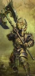 Chosen of Nurgle (Great Weapons)Great Axe Infantry |
T4 | 80 | 11,440 | 120 | 85 | 28 | 43 | 51 | 50 | — | 363 |
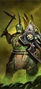 Putrid BlightkingsAxe Infantry |
T4 | 32 | 11,840 | 120 | 85 | 31 | 48 | 67 | 75 | — | 375 |
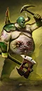 Putrid Blightkings (Dual Axes)Dual Axe Infantry |
T4 | 32 | 11,840 | 120 | 85 | 31 | 54 | 51 | 80 | — | 400 |
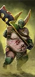 Putrid Blightkings (Great Weapons)Great Axe Infantry |
T4 | 32 | 11,840 | 120 | 85 | 31 | 50 | 47 | 80 | — | 412 |
远程步兵1 个单位
| 兵种 | T | 兵模 | 生命 | 护甲 | 领导 | 速度 | 近攻 | 近防 | 武器 | 远程 / 射程 | 维护 |
|---|---|---|---|---|---|---|---|---|---|---|---|
Soul Grinder of NurgleMissile Monster |
T4 | 1 | 8,188 | 90 | 70 | 75 | 42 | 35 | 450 | 356 / 360m | 475 |
怪步 / 飞行步兵6 个单位
| 兵种 | T | 兵模 | 生命 | 护甲 | 领导 | 速度 | 近攻 | 近防 | 武器 | 远程 / 射程 | 维护 |
|---|---|---|---|---|---|---|---|---|---|---|---|
 Chaos Furies (Nurgle)Flying Melee Infantry |
T2 | 60 | 5,280 | 25 | 50 | 110 | 36 | 18 | 44 | — | 138 |
 Rot FliesFlying War Beasts |
T2 | 12 | 6,192 | 50 | 60 | 90 | 34 | 24 | 85 | — | 200 |
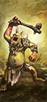 Bile TrollsMonstrous Infantry |
T3 | 16 | 8,672 | 60 | 50 | 54 | 29 | 45 | 115 | — | 250 |
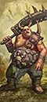 Plague OgresMonstrous Infantry |
T3 | 16 | 10,112 | 50 | 80 | 48 | 35 | 47 | 110 | — | 350 |
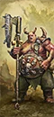 Plague Ogres (Great Weapons)Monstrous Infantry |
T3 | 16 | 10,112 | 50 | 80 | 48 | 35 | 47 | 110 | — | 350 |
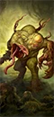 Spawn of NurgleMonstrous Infantry |
T3 | 16 | 9,632 | 10 | 100 | 42 | 31 | 33 | 170 | — | 250 |
近战骑兵3 个单位
| 兵种 | T | 兵模 | 生命 | 护甲 | 领导 | 速度 | 近攻 | 近防 | 武器 | 远程 / 射程 | 维护 |
|---|---|---|---|---|---|---|---|---|---|---|---|
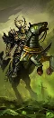 Chaos Knights of NurgleCavalry |
T3 | 60 | 8,760 | 120 | 75 | 70 | 37 | 55 | 53 | — | 375 |
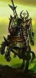 Chaos Knights of Nurgle (Lances)Shock Cavalry |
T4 | 60 | 8,760 | 120 | 75 | 70 | 37 | 43 | 53 | — | 400 |
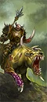 Rot KnightsMonstrous Cavalry |
T4 | 32 | 8,320 | 100 | 75 | 75 | 42 | 48 | 60 | — | 450 |
远程骑兵1 个单位
| 兵种 | T | 兵模 | 生命 | 护甲 | 领导 | 速度 | 近攻 | 近防 | 武器 | 远程 / 射程 | 维护 |
|---|---|---|---|---|---|---|---|---|---|---|---|
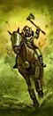 Marauder Horsemen of Nurgle (Throwing Axes)Missile Cavalry |
T2 | 60 | 5,940 | 15 | 48 | 90 | 17 | 31 | 24 | 27 / 70m | 162 |
怪骑3 个单位
| 兵种 | T | 兵模 | 生命 | 护甲 | 领导 | 速度 | 近攻 | 近防 | 武器 | 远程 / 射程 | 维护 |
|---|---|---|---|---|---|---|---|---|---|---|---|
Plague Drones of NurgleFlying War Beasts |
T3 | 12 | 7,128 | 50 | 70 | 90 | 36 | 36 | 105 | — | 300 |
 Pox Riders of NurgleWar Beasts |
T3 | 24 | 7,872 | 50 | 75 | 65 | 36 | 36 | 64 | — | 262 |
 Plague Drones of Nurgle (Death's Heads)Flying Missile War Beasts |
T4 | 12 | 7,128 | 50 | 70 | 90 | 36 | 36 | 105 | 113 / 70m | 375 |
战车1 个单位
| 兵种 | T | 兵模 | 生命 | 护甲 | 领导 | 速度 | 近攻 | 近防 | 武器 | 远程 / 射程 | 维护 |
|---|---|---|---|---|---|---|---|---|---|---|---|
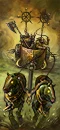 Chaos Chariots of NurgleChariot |
T2 | 4 | 6,292 | 110 | 70 | 78 | 17 | 33 | 40 | — | 213 |
战兽2 个单位
| 兵种 | T | 兵模 | 生命 | 护甲 | 领导 | 速度 | 近攻 | 近防 | 武器 | 远程 / 射程 | 维护 |
|---|---|---|---|---|---|---|---|---|---|---|---|
 Chaos Warhounds (Poison)War Beasts |
T1 | 80 | 6,080 | 15 | 38 | 95 | 26 | 17 | 22 | — | 113 |
 Plague Toads of NurgleWar Beasts |
T2 | 24 | 6,192 | 50 | 55 | 65 | 30 | 24 | 50 | — | 162 |
巨兽4 个单位
| 兵种 | T | 兵模 | 生命 | 护甲 | 领导 | 速度 | 近攻 | 近防 | 武器 | 远程 / 射程 | 维护 |
|---|---|---|---|---|---|---|---|---|---|---|---|
Beast of NurgleMonster |
T2 | 1 | 6,388 | 50 | 60 | 45 | 42 | 34 | 320 | — | 200 |
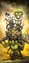 Chaos Warshrine of NurgleSupport Monster |
T3 | 1 | 12,376 | 60 | 60 | 38 | 30 | 35 | 375 | — | 325 |
Great Unclean OneMonster |
T4 | 1 | 12,360 | 50 | 75 | 36 | 55 | 45 | 530 | — | 500 |
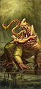 Toad DragonColossal Beast |
T5 | 1 | 13,970 | 60 | 75 | 60 | 51 | 36 | 600 | — | 500 |
名将团12 个单位
| 兵种 | T | 兵模 | 生命 | 护甲 | 领导 | 速度 | 近攻 | 近防 | 武器 | 远程 / 射程 | 维护 |
|---|---|---|---|---|---|---|---|---|---|---|---|
 The Frolickers Bubonic (Nurglings)Swarm · Renown |
T2 | 60 | 9,300 | 0 | 60 | 34 | 34 | 31 | 28 | — | 138 |
Worshippers of the Crow (Marauders – Great Weapons)Great Axe Infantry · Renown |
T2 | 120 | 10,200 | 15 | 70 | 35 | 38 | 32 | 30 | — | 163 |
 Barons of the Bog (Pox Riders of Nurgle)War Beasts · Renown |
T3 | 24 | 7,872 | 80 | 85 | 65 | 45 | 45 | 64 | — | 313 |
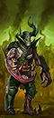 The Daemonspew (Forsaken)Melee Infantry · Renown |
T3 | 80 | 8,720 | 85 | 80 | 46 | 35 | 32 | 58 | — | 250 |
 Festering Stooges (Exalted Plaguebearers of Nurgle)Sword Infantry · Renown |
T4 | 100 | 13,200 | 35 | 90 | 27 | 48 | 50 | 52 | 38 / 70m | 388 |
 Noxbringer (Soul Grinder of Nurgle)Missile Monster · Renown |
T4 | 1 | 8,188 | 90 | 80 | 75 | 52 | 44 | 450 | 293 / 360m | 800 |
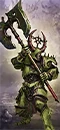 Sons of the Last Plague (Chosen of Nurgle – Great Weapons)Great Axe Infantry · Renown |
T4 | 80 | 11,440 | 120 | 95 | 28 | 53 | 62 | 50 | — | 450 |
 The Angels of Decay (Plague Drones – Death's Heads)Flying Missile War Beasts · Renown |
T4 | 12 | 7,128 | 50 | 80 | 90 | 45 | 45 | 105 | 167 / 70m | 375 |
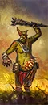 Bilious Thunderguff (Chaos Giant)Monster · Renown |
T5 | 1 | 13,882 | 50 | 110 | 39 | 73 | 43 | 700 | — | 425 |
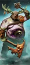 The Repugnauts of Brass Keep (Putrid Blightkings – Dual Axes)Dual Axe Infantry · Renown |
T5 | 32 | 11,840 | 80 | 95 | 34 | 66 | 62 | 80 | — | 475 |
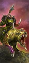 The Rotting Riders (Rot Knights)Monstrous Cavalry · Renown |
T5 | 32 | 8,320 | 100 | 85 | 75 | 52 | 59 | 64 | — | 550 |
 Uncle Furuncle (Great Unclean One)Monster · Renown |
T5 | 1 | 12,360 | 50 | 85 | 36 | 67 | 56 | 530 | — | 550 |
已排除“扩展名册（extended roster）”单位。数值为 Patch 9.0.4；不同版本可能微调。
04 / ARMY BUILD配兵思路
先按角色填槽，再按对手换兵。下面是一个通用的 20 槽骨架，以及用本页推荐兵种拼出的示例。
| 角色 | 建议槽位 | 说明 |
|---|---|---|
| 扛线 | 5–6 | 持盾 / 重甲步兵，任务是站住，不是杀敌。 |
| 远程 | 3–5 | 弓箭、火枪或炮兵；至少 2 队能打重甲。 |
| 机动 | 3–4 | 骑兵、战车、飞行单位；包抄、背冲、追逃。 |
| 巨兽 / 炮兵 | 1–3 | 破阵、斩将、攻城；别孤军深入。 |
| 英雄 | 1–3 | 法师 + 支援英雄，嵌入主力。 |
示例：4× 纳垢灵 + 2× 瘟疫使者 + 4× 纳垢灵魂研磨者 + 3× 纳垢瘟疫蝇 + 2× 纳垢兽 + 领主 + 1 英雄，余下 3–4 槽按对手补破甲 / 反大型 / 炮兵。
重甲多带破甲（火枪、大炮、巨斧）；巨兽多带反大型（长戟、弩炮）；鼠人 / 绿皮多带范围伤害（吹息、炮兵、火焰）；骑兵多留 2 队长戟或反大型。不要一套配兵打到底。